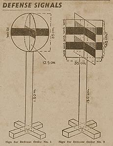
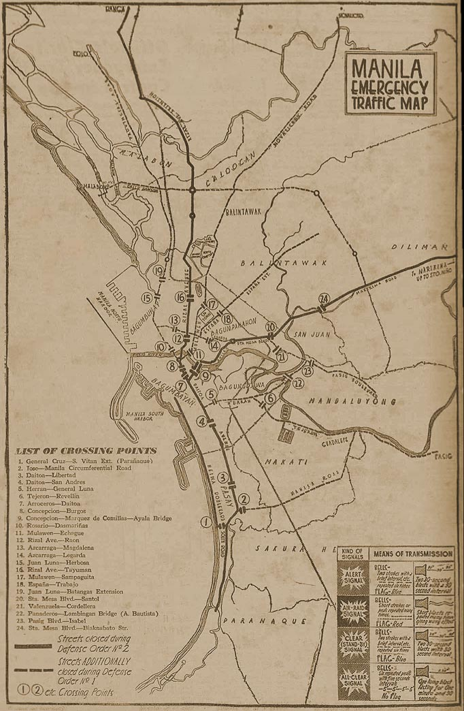

|
j
a v a s c r i p t |
| Pg.1 | Pg.2 Map of Crossing Points |
September 13, 1944

Defense Signal Signs 1 & 2
(in lieu of sirens) Manila is in TURMOIL. The Japanese are all over the place. You can't go this way or that way, or cross here or there. Hey there, you blockhead...not that way! NAW, you can't cross...nobody can cross — that means you too!! Carretelas are charging double for places you CAN go to — and no one is kicking. On Marqués de Comillas, a truck loaded with sugar was literally stormed in broad daylight by a group of street urchins armed with a knife, a bayong and plenty of nerve. One kid slashed the bags and other kids filled their bayongs. Two other trucks lost most of their contents that way. An impotent Japanese civilian armed with a long stick chased an urchin right under the nose of a bayonet wielding sentry, who let them both pass. Then a kidnapping took place right under Santamaria's window. A man pulled a pistol and ordered another into a carretela. No one said a peep. On Santa Monica†, two civilians posing as MPs searching for a short-wave radio robbed several families of food, jewels and other valuables. The Tribune says the government will hospitalize underfed people roaming the city. Yes, it's come to that. † Near the Dewey Court Apartments |
|
|
|
|
|
| Traffic Turmoil| Pg.2 |
Crossing Restrictions
September 13, 1944

|